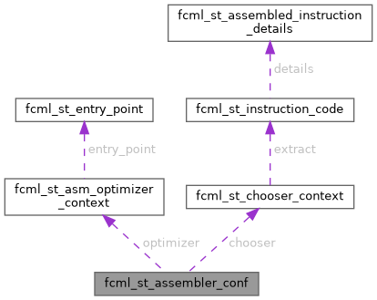

|
fcml 1.3.0
|
Assembler runtime configuration. More...
#include <fcml_assembler.h>

Public Attributes | |
| fcml_bool | increment_ip |
| Set to true in order to force assembler to increment IP address by length of the assembled instruction. | |
| fcml_bool | enable_error_messages |
| True if optional error and warning messages should be collected during processing. | |
| fcml_bool | choose_sib_encoding |
| If there are SIB and "ModR/M only" encodings available, choose the SIB based one. | |
| fcml_bool | choose_abs_encoding |
| If memory address can be encoded as relative or absolute value choose the absolute addressing. | |
| fcml_bool | force_rex_prefix |
| Sometimes REX prefix is useless so it is just omitted in the final machine code. | |
| fcml_bool | force_three_byte_VEX |
| Every 2-byte VEX/XOP prefix can be encoded using three byte form. | |
| fcml_fnp_asm_optimizer | optimizer |
| The optimizer implementation that should be used by the assembler. | |
| fcml_uint16_t | optimizer_flags |
| This field is passed to the chosen optimizer. | |
| fcml_fnp_asm_instruction_chooser | chooser |
| The instruction chooser implementation that should be used by the assembler to choose the most appropriate instruction encoding. | |
Assembler runtime configuration.
| fcml_bool fcml_st_assembler_conf::choose_abs_encoding |
If memory address can be encoded as relative or absolute value choose the absolute addressing.
It works in 64 bit mode only.
| fcml_fnp_asm_instruction_chooser fcml_st_assembler_conf::chooser |
The instruction chooser implementation that should be used by the assembler to choose the most appropriate instruction encoding.
Setting this value to NULL will cause the assembler to use the default instruction chooser.
| fcml_bool fcml_st_assembler_conf::force_rex_prefix |
Sometimes REX prefix is useless so it is just omitted in the final machine code.
By setting this flag to true you can force this prefix to be added anyway.
| fcml_bool fcml_st_assembler_conf::force_three_byte_VEX |
Every 2-byte VEX/XOP prefix can be encoded using three byte form.
Setting this flag to true forces it.
| fcml_fnp_asm_optimizer fcml_st_assembler_conf::optimizer |
The optimizer implementation that should be used by the assembler.
Setting it to NULL causes the assembler to use the default one.
| fcml_uint16_t fcml_st_assembler_conf::optimizer_flags |
This field is passed to the chosen optimizer.
It can be used to configure its behavior.